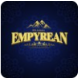

Activities & Responsibility
Experience & Leadership
A history of student representation, project coordination, and logistics management.
Student Coordinator
Debating Society, IIM Jammu · Full-time
Jammu, Jammu & Kashmir, India · On-site
- Led the coordination of institutional debate championships, managing registrations, event logistics, and scheduling.
- Liaised with senior administration and external speakers to organize national debating forums and speech panel events.
- Mentored student speakers and developed frameworks for constructive discussions and argumentation.
Student Coordinator
ATH Club - IIM Jammu · Full-time
Jammu, Jammu & Kashmir, India · On-site
- Structured weekly meeting schedules, organized internal finance and trade games, and managed database records of club participants.
- Handled inter-club logistics and coordination for technical/quantitative club events at IIM Jammu.
- Prepared marketing collateral and social media outlines to maximize club outreach and campus participation.
Alumni Relations Member
Alumni Relations, IIM Jammu
Jammu, Jammu & Kashmir, India
- Built and maintained a structured database connecting alumni across diverse corporate sectors.
- Coordinated interactive webinars, guest lectures, and networking events to foster student-alumni relations.
- Crafted news drafts, email newsletters, and annual reports summarizing institutional growth achievements.
Human Resources Intern
EdZpace · Internship
Dubai, United Arab Emirates · Remote
- Supported talent acquisition flows, parsed resumes, scheduled interviews, and updated candidate records.
- Facilitated remote onboarding setups, assisting new team members with platform accounts and documentation checks.
- Managed international HR logs, tracking intern cohorts across multiple time zones.

Member - Marketing and Creatives Team
Empyrean IIM Jammu · Part-time
Jammu, Jammu & Kashmir, India
- Designed high-impact visual banners, posters, and digital assets for IIM Jammu's annual cultural festival (Empyrean).
- Formulated multi-channel social media launch schedules, driving registration metrics across student communities.
- Collaborated with cross-functional sponsorship and logistics teams to maintain consistent branding lines.